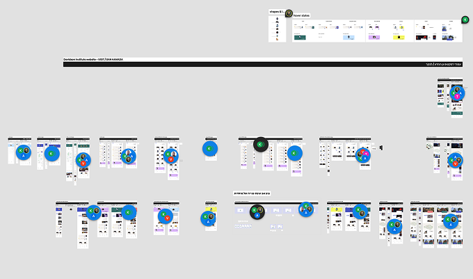
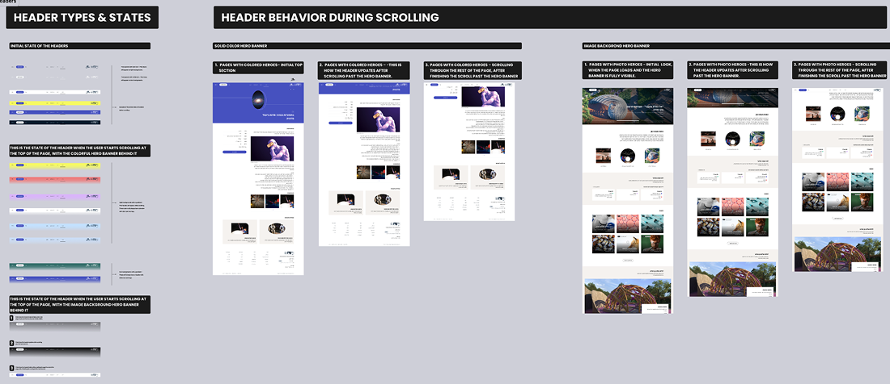

Design quality on the team was consistently high. Implementation in dev wasn't keeping up. Two design teams of two designers each, working with a dev team of three plus a tech lead. Despite strong collaboration on both sides, work frequently lost clarity between design completion and engineering execution.
The core issue was how work transitioned between design and engineering. With no shared prioritization or readiness framework, all design work was treated as equally urgent. Clarifications surfaced late, during active development. Rework cycles increased and delivery velocity suffered.

Back-and-forth (in comments) with the dev lead during active development — the clarification work that the new process was designed to eliminate.
- Cross-functional teams working in parallel
- Ongoing delivery commitments (no pause to "fix process")
- High trust culture: changes needed buy-in, not enforcement
I redesigned how work moved between design and engineering. Instead of a single handoff moment, I introduced a phased delivery model that made expectations explicit before development started.
I defined clear readiness checkpoints (scope clarity, open questions, dependencies) and introduced lightweight structured documentation for each phase. Handoff conversations moved earlier, from reactive clarification to proactive risk surfacing.
We framed it as a shared system process.

Developer guidelines for header components, aligned to design specs.
The most visible shift was in the nature of the conversations.
Before the new model, questions from engineering tended to surface mid-sprint, often about intent, scope, or whether a design was final. After introducing the phased delivery model and joint walkthroughs, those questions moved earlier, into a space where they could actually be addressed without disrupting active development.
Over time, as I built a clearer picture of how the dev team worked best — their preferred level of detail, where they needed explicit decisions versus flexibility — the handoff process became faster and left fewer open ends. Designs landed in a state that engineers could actually work from, rather than interpret.
The sprint dynamic stabilized. Problems got resolved before they could block anything.
What this case reinforced: before designing any collaborative workflow, understand how both sides already work. Existing practices, how each team shares information, what they've tried before — that conversation shapes what actually gets adopted. The phased model we landed on was built around how this specific team operated, not applied on top of them.